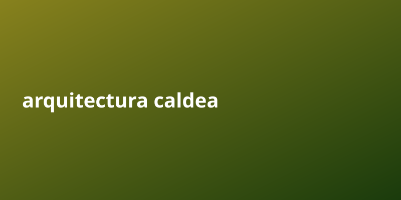

Arquitectura caldea | Arquitectura caldea

Si buscas resultados reales con arquitectura caldea, esta guia automatica te ahorra horas de investigacion.
La arquitectura caldea o neobabilónica se refiere a aquella empleada en las regiones de la baja Mesopotamia, en torno a la ciudad de Babilonia. Como monumentos más antiguos se encuentran las primitivas torres de plataformas escalonadas que quizás sirvieron de modelo a las más antiguas pirámides egipcias[cita requerida] como se aprecia por la semejanza de su estructura. Y aunque las ruinas de los monumentos arquitectónicos explorados en Mesopotamia no son tan antiguos como las pirámides de Egipto, otros vestigios diferentes y restos de la civilización hallados en aquellas regiones parecen acusar mayor antigüedad que los de las orillas del Nilo, especialmente, las inscripciones ideográficas que se conservan en el Museo Británico.
Puntos clave sobre arquitectura caldea
- La informacion publica gratuita es una mina de oro subestimada. Saber recopilarla y empaquetarla es una habilidad rentable.
- Diferenciarse no requiere inventar nada: basta con curadar, organizar y entregar valor de forma clara y constante.
- La clave esta en la consistencia. Los sistemas que funcionan se apoyan en procesos repetibles y medibles, no en suerte.
Por que importa
La informacion publica gratuita es una mina de oro subestimada. Saber recopilarla y empaquetarla es una habilidad rentable. Diferenciarse no requiere inventar nada: basta con curadar, organizar y entregar valor de forma clara y constante.
Guia paso a paso
- Investiga bien el tema de arquitectura caldea usando fuentes publicas gratuitas.
- Organiza la informacion en puntos claros y accionables.
- Crea un sistema que publique de forma automatica y constante.
- Revisa metricas y elimina lo que no aporta valor.
- Escala lo que funciona y delega el resto a la automatizacion.
Errores comunes a evitar
- Quierer hacerlo todo manualmente en lugar de automatizar.
- Ignorar la consistencia y publicar solo cuando hay tiempo.
- Copiar sin curador: el valor esta en organizar y entregar claridad.
- No medir resultados y repetir lo que no funciona.
- Subestimar el poder de la frecuencia y el volumen compuesto.
Preguntas frecuentes
¿Cuanto tiempo tarda en verse resultado con arquitectura caldea?
Depende de la constancia; con publicacion automatica, el efecto compuesto aparece semana a semana.
¿Necesito invertir dinero para empezar?
No. Con fuentes publicas y automatizacion puedes arrancar sin capital inicial.
¿Por que la frecuencia importa tanto?
Porque cada pieza suma alcance acumulado; el volumen constante vence a la perfeccion esporadica.
¿Como diferencio mi contenido?
Curado, claridad y formato: empaquetar lo publico en algo util y facil de consumir.
Checklist rapida
- Define una meta clara de arquitectura caldea y un plazo realista.
- Automatiza la parte repetitiva para no depender de tu tiempo.
- Mide resultados cada ciclo y ajusta lo que no funcione.
- Reutiliza contenido publico bien curado en vez de crear desde cero.
- Mantén consistencia: el volumen compuesto es la clave del crecimiento.
Conclusion
El factor tiempo juega a tu favor cuando todo esta automatizado. Cuanto antes inicies, antes compone interes compuesto.
Herramienta recomendada para empezar: https://example.com/?ref=AUTONICHE